Скриншоты App Store — полная серия
Две вкладки: T — вариант Claude (рассуждение + Jev, сцены Codex GPT Image), S — вариант Codex. На телефоне листайте ряд вбок; нажатие увеличивает кадр. Пришлите номера кадров и правки.
T · Один заголовок, одна сцена, один результат
На ревью · 20.09.2026Заголовок 64 pt SF Pro Rounded (192 px в экспорте), две строки, вторая — coral. Подзаголовок 23 pt — одна строка, читается на 220 px. Сцена — живопись онбординга V2 (мама со спины, лиц нет, ребёнок не кричит). Одна белая карточка внутри телефона с одним крупным результатом — реальные строки экранов V2. Ни чипов, ни буллетов.
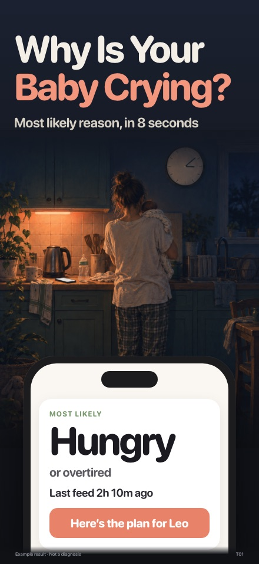
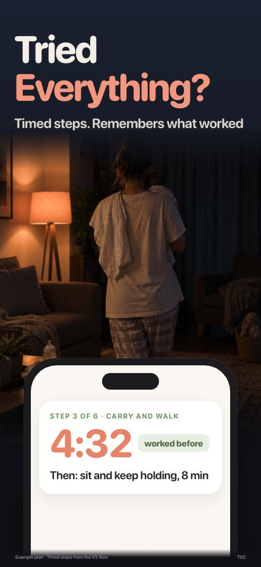
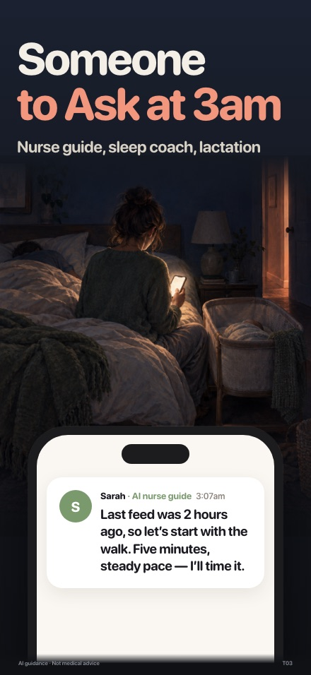
Ряд 220 px как в поиске: открыть.
{kind=link}
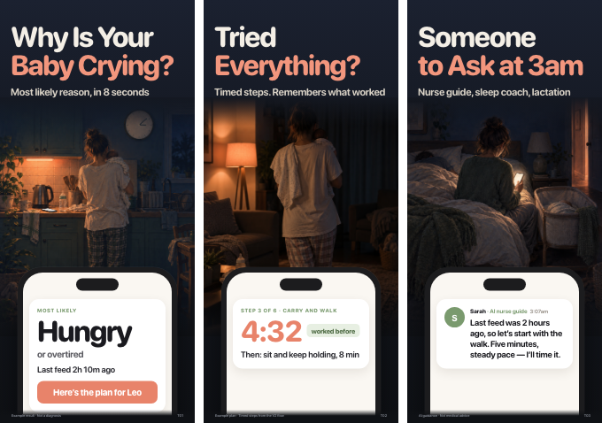
T-B · То же, светлая рамка
Jev за тёмный фон 0.56 против 0.44, но проходы разошлись (0.61 / 0.43) — неустойчиво. Ночные мамы и отцы — за тёмный; colic, feed, second и бабушки — за светлый. Поэтому обе версии. Дизайн-система CrySnap: 7 светлых + 1 тёмный.
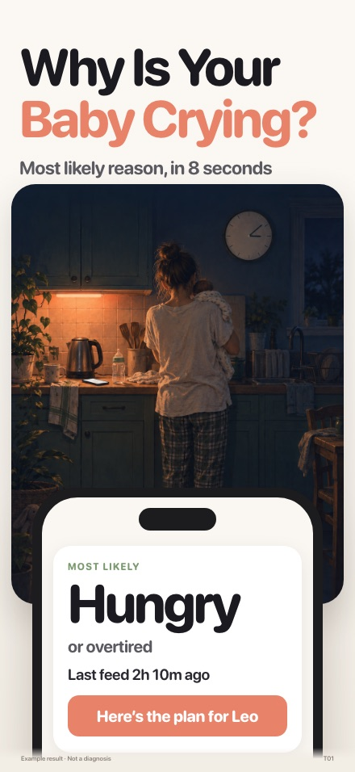
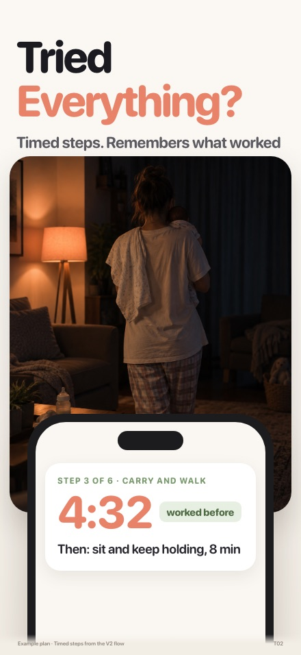
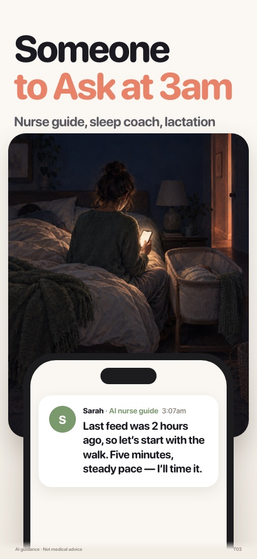
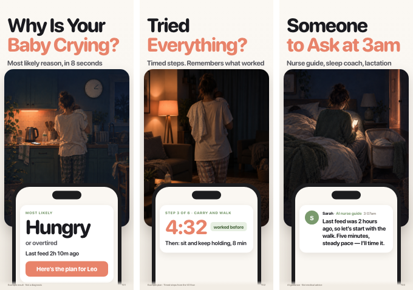
Боли — от большей к меньшей (Jev, панель 24 родителя × 2 прохода)
Рейтинг из исследования спринта 19.09 (сила 0–4 · «заплатит $7.99/нед»), плюс новый вопрос 20.09: какую боль показать первым кадром.
| # | Боль словами родителя | Сила | Заплатит | Первым кадром | Кадр |
|---|---|---|---|---|---|
| 1 | Все плачи одинаковые — голод, усталость или боль? | 2.52 | 0.30 | 0.30 (feed 0.58) | T01 |
| 2 | Кормила, меняла, качала — ничего не помогает, идеи кончились | 2.82 | 0.08 | 0.20 (second 0.38) | T02 |
| 3 | Это нормально, столько плакать? Когда пройдёт? | 2.57 | 0.05 | 0.08 (colic 0.33) | T03 / CPP colic |
| 4 | Без сил, сон хаотичный, не угадать дневной сон | 2.37 | 0.10 | 0.04 | — |
| 5 | Ночью спросить некого | 2.26 | 0.07 | 0.17 (night 0.27, dad 0.28) | T03 |
| 6 | Советы противоречат друг другу | 2.19 | 0.03 | 0.06 | — |
| 7 | Нечего показать педиатру | 1.97 | 0.08 | 0.07 (colic 0.24) | — |
| 8 | Боюсь пропустить серьёзное | 1.95 | 0.08 | 0.09 (colic 0.26) | CPP colic |
Colic-мамы (20 %) во всех вопросах хотят другое: «Is this normal?», красные флаги, карточку про норму (0.69). Это отдельная Custom Product Page под запрос colic, а не правка основной серии.
Что показал Jev для T
- T01 заголовок. «Stop Guessing at 3am» нажали бы чаще (0.37), но понимают 0.03 и проходы разошлись на 0.10. «Why Is Your Baby Crying?» — 0.29 нажму / 0.18 понял, второе место по обеим шкалам, и слово crying объясняет категорию. «Baby Cry Translator» понимают 0.71, но не нажимают (0.05) — категория остаётся в названии приложения.
- T02 заголовок. «Tried Everything?» 0.50 стабильно во всех когортах, но понимают 0.01. «Fed. Changed. Still Crying?» понимают 0.79, нажимают 0.28. Выбран первый — категорию несут сцена и карточка; второй свёрстан как запасной.
- T03 заголовок. «Someone to Ask at 3am» 0.39 (понял 0.52) + «Nobody to Ask at 3am?» 0.34 — одна идея 0.73. «Three Experts, Any Hour» — 0.11.
- Сцены. Героиня нужна: мама со спины — кухня 0.45 (T01), гостиная 0.76 (T02), край кровати 0.62 (T03). «Только руки» ≤0.07. Отцы (15 %) везде хотят отца (0.71–0.93) — сцены для CPP уже сгенерированы.
- Карточки. Один результат побеждает: «Hungry · or overtired · Last feed 2h 10m» 0.84; таймер «4:32 · worked before» 0.62; реплика nurse guide 0.72. Списки и кнопки «Calmer / Still crying» ≤0.35.
- Формат. Карточка внутри телефона 0.47 · карточка без телефона 0.35 · телефон + чипы 0.18.
- Первый кадр. По описанию кадров — T02 0.46 (dad .61, second .65); по болям — скан 0.30. Порядок оставлен T01 → T02 → T03 (рейтинг болей + за что платят). Открытый вопрос: поставить ли «Tried Everything?» первым.
Jev судит описания, не пиксели. Реальный ответ даст Product Page Optimization в App Store Connect. Данные: research/screenshots-headlines-jev-2026-09-20/ в репозитории CrySnap.
Почему предыдущие раунды не сработали (разбор Claude)
| Раунд | Что делали | Почему не читается на телефоне |
|---|---|---|
| CrySnap iter1 апр. | «It's 3am. You need answers.» / «From cry to answer in 8 seconds» с реальным фото кроватки / тёмный voice mode | F2 6.8: ушли от сцены-wedge, реальное фото ребёнка против DECISIONS, жёлтая плашка Hungry ≠ светофор; тон F1 обвинительный |
| Codex r2–r3 | фото + плотная карточка; натюрморт, заголовок слева | много текста, нет одной сцены, нет результата приложения |
| Codex r4–r5 | тёмное кино, телефон огромный | объект и суть не видны на 220 px |
| Codex r6 | светлый, телефон в центре, 2–3 чипа, подзаголовок 13 pt | подзаголовок и чипы не читаются; сцена — реквизит; чипы называют функции, не пользу («буллетов слишком много, мелко, научно») |
| Codex r7 | героини онбординга + телефон + 3 буллета | три мелких буллета + мелкий UI; сцена не становится якорем |
| Codex r8 | огромный заголовок, одна карточка, оверлей на весь кадр | кроп потерял смысл сцены, оверлей убил контраст |
| Codex r9–r10 | 60 px заголовок, сцена + панель продукта / телефон + карточка | панель — снова плотная реконструкция продукта; два объекта спорят; точки в конце заголовков |
Узор один: каждый раунд либо уменьшал текст, чтобы вместить больше, либо добавлял второй объект. WatchSnap, SnapFlip, JewelSnap конвертируют одним заголовком, одной сценой, одним результатом — T строит только это.
Слабые места T
- T02 «Tried Everything?» — ставка на нажатие, не на понятность. Запасной «Fed. Changed. / Still Crying?» — одна правка copy.json.
- Тёмный / светлый фон Jev не развёл — решение за вами или PPO.
- Реплика Sarah в T03 — четыре строки 19 pt; на 220 px читаются заголовок и имя. Строка реальная, резать нельзя.
- T01/T02 обещают V2 (план, «remembers what worked»). Пока в App Store версия 1.3 — грузить нельзя, только вместе с V2.
Ваше решение по T
Кадры: T01 / T02 / T03 — оставить / переделать (что именно) Фон: T тёмный / T-B светлый / решит PPO T02 заголовок: Tried Everything? / Fed. Changed. Still Crying? Первый кадр: T01 (скан) / T02 (tried everything) CPP: colic («Is This Normal?») — да / нет · dad (отец в кадре) — да / нет Дальше: кадры 4–8 по этой формуле — да / нет
S6 · Исходная композиция + настоящий интерфейс
Для обсуждения · 26.09.2026Сохранены сцены, заголовки, буллеты и телефон: те же размер, положение и наклон. Изменено содержимое экрана. Без увеличенного телефона и дополнительных выносок.
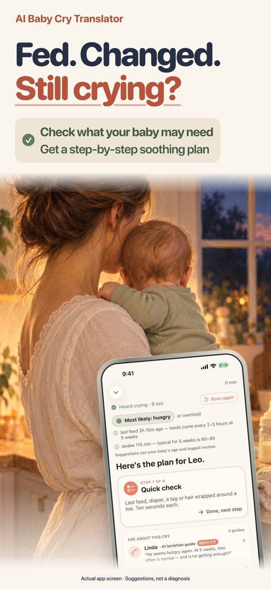
Реальный экран после сканирования: возможная потребность и первый шаг.
Скачать PNG
{kind=link}
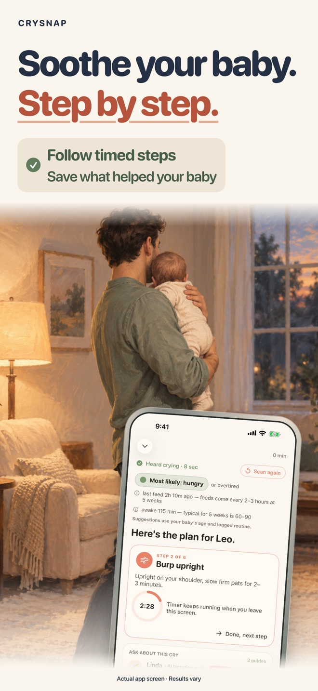
Реальная карточка активного шага с таймером.
Скачать PNG
{kind=link}
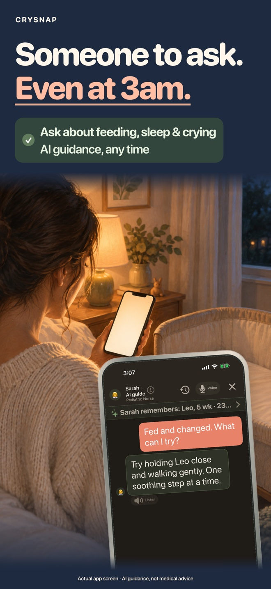
Настоящий интерфейс с короткими демонстрационными сообщениями и системным крупным текстом.
Скачать PNG
{kind=link}
Скачать три PNG · Сравнить при ширине 220 px · Исходные S3 ниже ↓
{kind=link}
В первых двух кадрах пока показан текущий UI — при прежнем размере телефона он остаётся плотным. Более короткий интерфейс требует правки самого приложения и включения её в отправляемый Apple билд. В чате используются два вымышленных демосообщения, отрисованных настоящим приложением.
Для локализации: прежние переводы заголовков и буллетов, снимки приложения на нужном языке, два коротких текста демодиалога. Кандидат ещё не загружен в App Store Connect и не проходил проверку Apple. Остальные пять кадров пока не переработаны.
S3 · Полная серия из восьми скриншотов
Тёмный третий утверждён · 4–8 готовы к ревьюПервые три сохранены без изменений: третий — тёмный, как утвердили. Дальше — возрастные ориентиры, личный плейбук, поддержка родителя, подготовка звонка и передача смены. Маленькие телефоны и одна выделенная плашка пользы сохраняют главными сцену и заголовок.
Скачать все восемь PNG · 1320 × 2868, RGB, без альфы. Вся серия 4 × 2 · Горизонтальный ряд.
{kind=link}
{kind=link}
Листайте вправо до восьмого кадра →. Нажатие увеличивает. Переключатель сверху — проверка при 220 px.
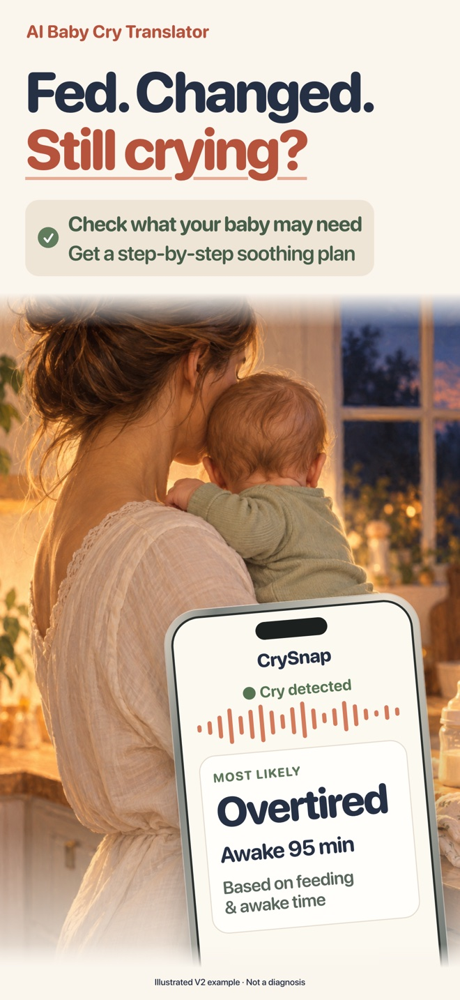
AI Baby Cry Translator, вероятная потребность и объяснение из контекста.
Скачать PNG
{kind=link}
План успокоения, таймер и память того, что помогло.
Скачать PNG
{kind=link}
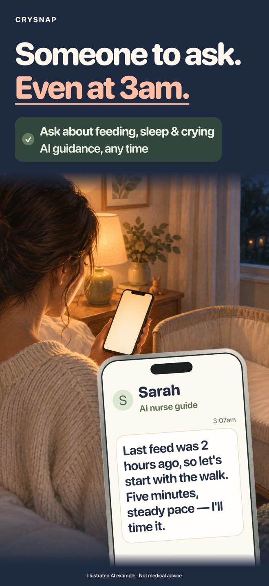
Тёмный вариант утверждён. AI-помощник с контекстом малыша.
Скачать PNG
{kind=link}
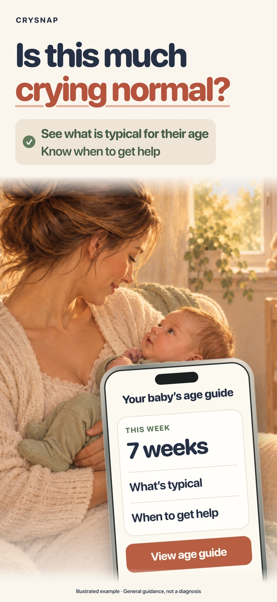
Возрастной ориентир и отдельный путь «когда обращаться за помощью».
Скачать PNG
{kind=link}
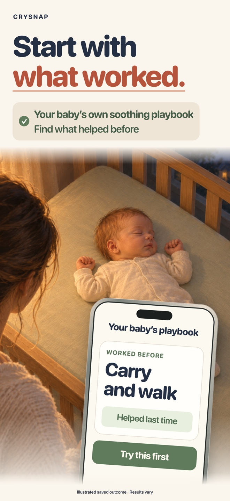
Личный плейбук: начать с того, что уже помогло вашему малышу.
Скачать PNG
{kind=link}
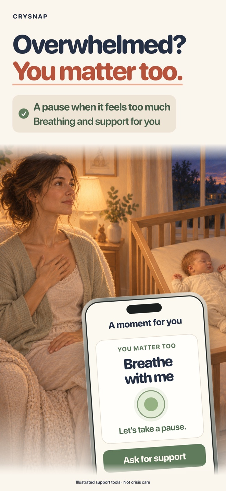
Дыхание и возможность попросить поддержки, когда становится тяжело.
Скачать PNG
{kind=link}
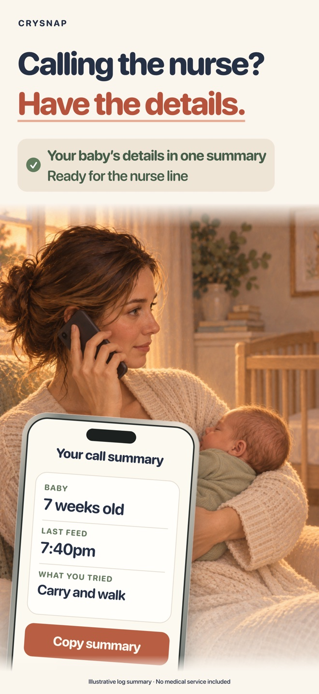
Возраст, кормление и попытки успокоить — в готовой сводке для своей медсестры.
Скачать PNG
{kind=link}
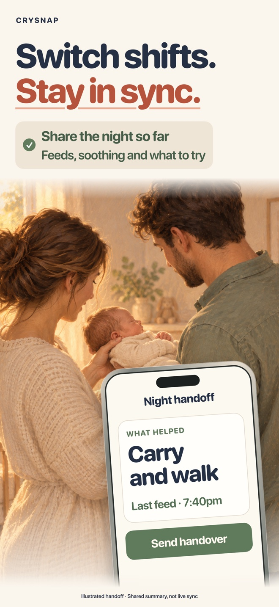
Последнее кормление, что помогло и что попробовать — в сообщении партнёру.
Скачать PNG
{kind=link}
Восемь кадров как единая серия
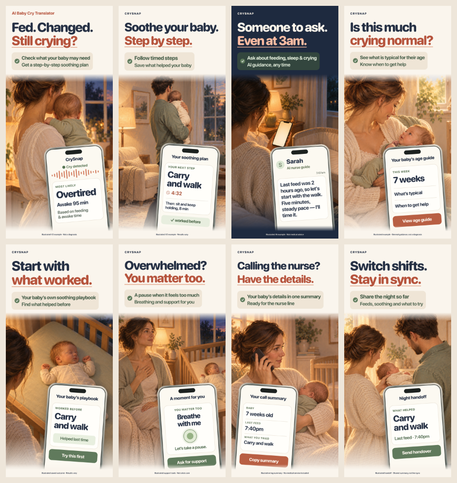
Утверждённые 1–3 · Новые 4–8 · Все восемь при 180 px
{kind=link}
{kind=link}
{kind=link}
Новые причины скачать
| Кадр | Заголовок | Задача родителя |
|---|---|---|
| 04 | Is this much crying normal? | Найти ориентир по возрасту и понять, когда нужна помощь |
| 05 | Start with what worked. | Не повторять перебор способов — достать то, что уже помогало |
| 06 | Overwhelmed? You matter too. | Получить поддержку самому, когда плач выматывает |
| 07 | Calling the nurse? Have the details. | Подготовить факты для звонка, а не вспоминать всё на ходу |
| 08 | Switch shifts. Stay in sync. | Передать смену и контекст партнёру без долгого пересказа |
Порядок продолжает продуктовую логику sprint. Кадр 05 раскрывает память из второго; кадр 07 — подготовка к звонку своей медсестре, а не AI-чат из третьего. Это последовательность аргументов для скачивания, не универсальный рейтинг болей.
Проверка заголовков через Jev
Один раунд: 24 синтетических профиля × два порядка вариантов, 48 успешных вызовов. Пять пар заголовков, одинаковые подписи и функция внутри каждой пары; «ни один» разрешён. Выбранные варианты лидируют в обоих порядках.
| Кадр | Выбранный | Альтернативный | Ни один |
|---|---|---|---|
| 04 | 0.614 | 0.170 — Worried about all that crying? | 0.216 |
| 05 | 0.623 | 0.148 — What calms your baby? | 0.229 |
| 06 | 0.571 | 0.223 — Take a breath. We’re here. | 0.206 |
| 07 | 0.488 | 0.340 — Need to call? Know what to say. | 0.173 |
| 08 | 0.598 | 0.202 — Hand over. Skip the recap. | 0.200 |
Числа — веса предпочтений модели по текстам, не доли родителей и не измеренная конверсия. Полный ряд и пиксели не оценивались. Метод и сырые результаты: research/screenshots-s3-full-2026-09-21/.
Готовность концепта
Восемь экспортов проверены по размерам, цвету, шрифтам и границам интерфейса. Первые три совпадают с утверждёнными PNG побайтно. Новые иллюстрации — 04, 06, 07, 08; кадр 05 использует готовую сцену S2. Тексты и телефоны редактируются отдельно от рисунков.
Это концепт витрины; недостающий функционал фиксируется для реализации. Связку AI-чата с таймером нужно довести до рабочего сценария. Возрастной экран не ставит диагноз и не объявляет любой плач нормой. Звонок — своей медсестре; CrySnap не включает медицинскую службу. Handoff — отправка сводки, не обещание live-sync. Продуктовый код не меняли; в App Store Connect не загружено.
Исходники, точные промпты, требования и контрольные суммы: marketing/appstore-v2/s3-full/. Предыдущие варианты сохранены ниже.
Архив S3 · первые три до утверждения тёмного
S3 · Сильная подача S1 + понятный AI-продукт
Conversion-first · обновлено после уточнения · 21.09.2026Сохранены все заголовки и строки пользы S1. Добавлены AI Baby Cry Translator и распознавание в телефоне. Телефоны на 31% уже S2, ниже и правее: мама, папа и малыш снова видны. Одна выделенная плашка на кадр; цифры вторичны. Если обещанию нужна новая функция — это требование к продукту, а не повод убирать пользу из концепта.
Скачать три PNG · 1320 × 2868, RGB, без альфы. Весь ряд · Миниатюра 180 px. Нажмите кадр для увеличения.
{kind=link}
{kind=link}

«Уже кормила и меняла — что дальше?» AI-переводчик плача: вероятная потребность и план действий. Польза S1 сохранена целиком.
Скачать PNG
{kind=link}
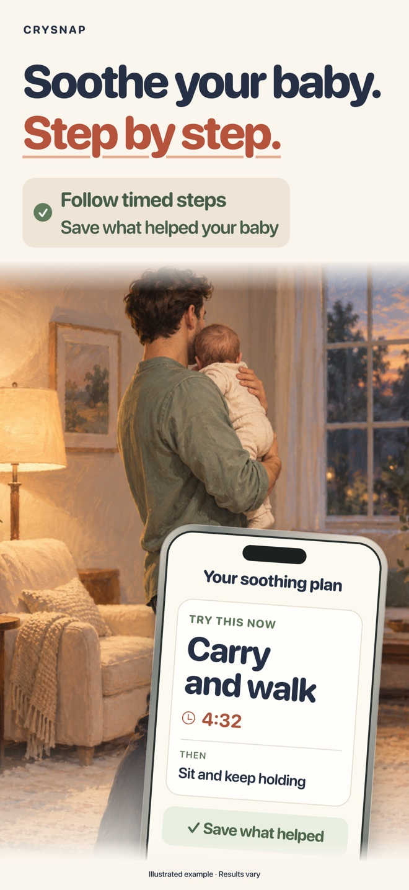
Узнаваемое действие папы, конкретный следующий шаг и сохранение того, что помогло. Таймер стал вторичным.
Скачать PNG
{kind=link}
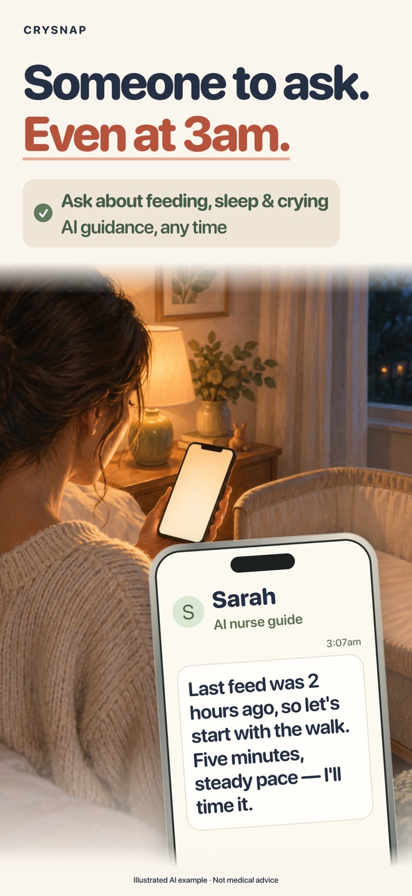
Помощь ночью — не только сон: кормление, сон и плач. Sarah явно подписана как AI; показан пример следующего шага.
Скачать PNG
{kind=link}
Основной ряд при 220 px:
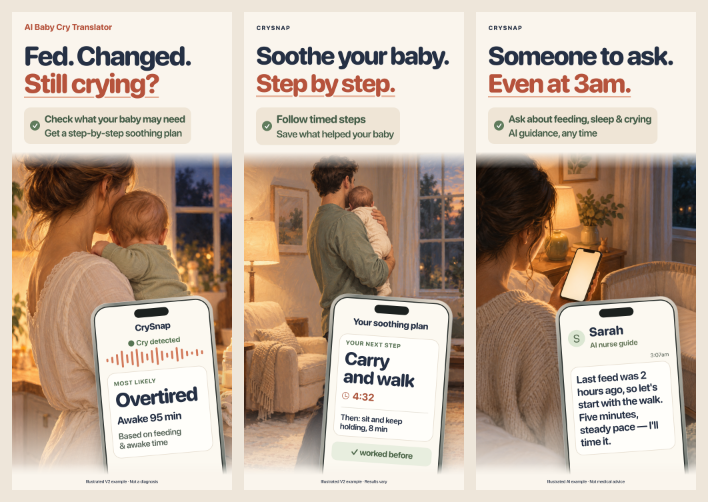
Нужен ли переход в тёмный?
Для основного S3 — не делаю его обязательным. Ночь уже понятна из «3am» и самой сцены. Светлый фон сохраняет цельность S1. Ниже тот же ряд, где изменены только цвета третьего кадра: тексты, сцены и размеры телефонов идентичны.
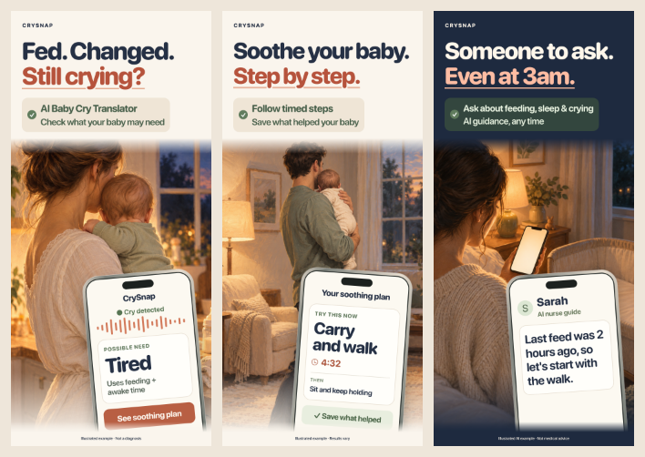
Тёмный третий кадр PNG · Скачать ряд с тёмным третьим · Открыть весь ряд
{kind=link}
{kind=link}
Jev по описаниям палитр: нет существенной разницы — 0.553, тёмный третий — 0.334, весь светлый — 0.113. Среди двух цветов модель предпочитает тёмный; светлый выбран ради сохранения композиции S1, а не потому, что он «победил по конверсии». Пиксели модель не видела.
Что здесь должно продавать скачивание
| Кадр | Боль | Обещание |
|---|---|---|
| 01 | Всё привычное уже попробовано; непонятно, что нужно малышу | Помочь понять вероятную потребность и получить план |
| 02 | Не знаю, что делать и как долго; забываю, что помогло | Пошаговое успокоение с таймером и памятью результата |
| 03 | Ночью некому задать вопрос | AI-помощник, который учитывает контекст и помогает действовать |
В предыдущих Jev-проверках тексты S1 были сильнее сокращённых версий. Поэтому теперь они не пересказываются заново: заголовки, обе строки пользы и содержательные доказательства S1 сохранены. Изменены иерархия, телефоны и видимость сцен. Этот обновлённый S3 отдельно не оценивался Jev; цифры старой редакции к нему не применяются. Реальных данных по скачиваниям пока нет.
История проверок — не результаты текущей редакции
24 синтетических профиля × два порядка, шесть когорт поровну, без изображений. Ранний S3 с короткими плашками и Emma уступал S1: 0.122 против 0.562. После возврата части пользы S3/S1 были близки, но порядок менял лидера. Версия с сокращённой репликой Sarah снова уступила: S1 0.375, старый S3 0.256, ни один 0.368. После уточнения владельца «сначала конверсионный концепт, функционал добавим» восстановлена вся смысловая основа S1; управление таймером из AI-чата отмечено как требование к продукту. Ни один старый результат не объявлен победой нового ряда.
Что продукт должен выполнить под этот концепт
Распознать плач → объяснить вероятную потребность → открыть план; провести по шагам и сохранить результат; дать AI-помощнику контекст и возможность предложить/запустить нужный таймер. Связка AI-чата с таймером — требование к реализации, пока не подтверждённая готовая функция. Она сохранена в концепте, как и обещание S1. Это страница ревью будущего оффера, не заявление о текущем релизе.
Сцены S1 сохранены без перегенерации. Телефоны — макеты концепта, не снимки симулятора. Полная реплика Sarah взята из примера V2-пейвола, не из живого чата. «Translator» не обещает диагноз или точность по одному звуку: в кадре остаётся объяснение из контекста.
Исходники: marketing/appstore-v2/s3/; метод и результаты: research/screenshots-s3-2026-09-21/. Проверены шрифты, RGB PNG, границы UI, оба ряда 180/220 px. Продуктовый код не меняли; в App Store Connect не загружено.
S2 · большие телефоны — открыть для сравнения
S2 · AI Baby Cry Translator → действие → сон
Более смелый вариант · 21.09.2026 · на ревьюСразу называем продукт. Крупный телефон показывает распознавание плача, следующий шаг и AI-помощь со сном. Общая волна и положение телефонов связывают кадры; фон переходит от кремового к ночному синему.
Скачать три PNG · 1320 × 2868, RGB, без альфы. Нажмите кадр для увеличения.
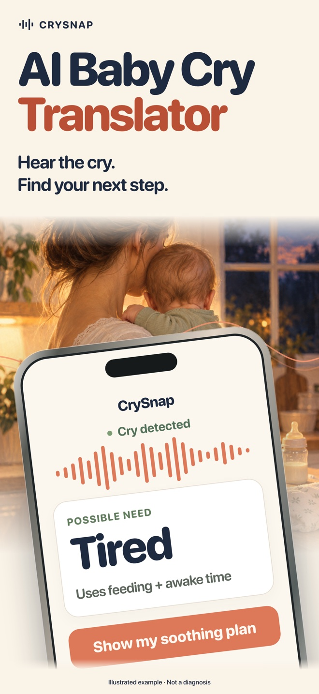
«Помоги понять малыша». Волна → плач обнаружен → возможная потребность → план.
Скачать PNG
{kind=link}
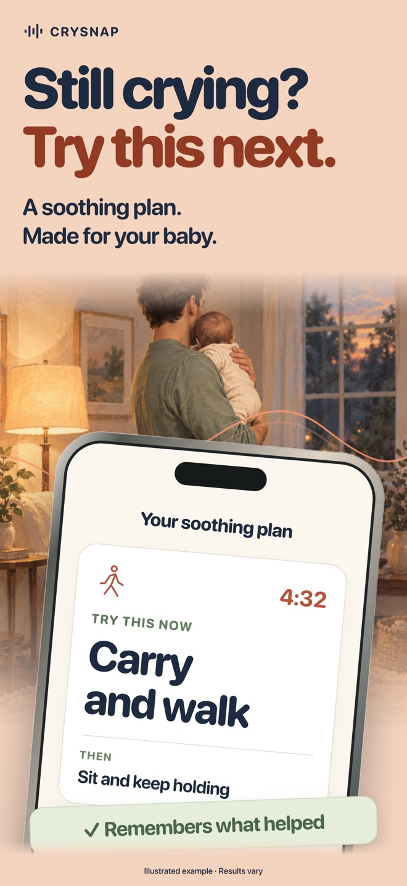
«Скажи, что делать сейчас». Крупное действие вместо главного акцента на цифрах. Память о том, что помогло.
Скачать PNG
{kind=link}
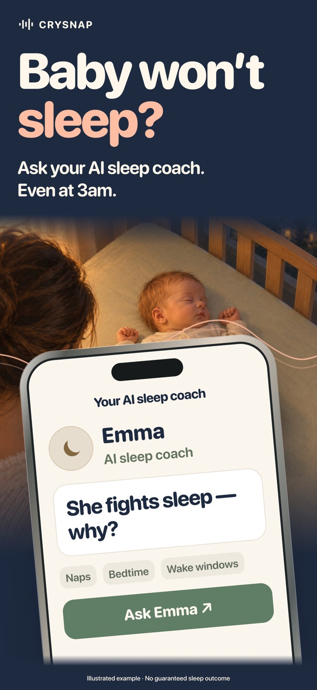
«Помоги разобраться со сном, даже ночью». Emma — AI sleep coach; конкретный вопрос вместо абстрактной поддержки.
Скачать PNG
{kind=link}
Единый ряд при 220 px. Проверка при 180 px · Открыть ряд
{kind=link}
{kind=link}
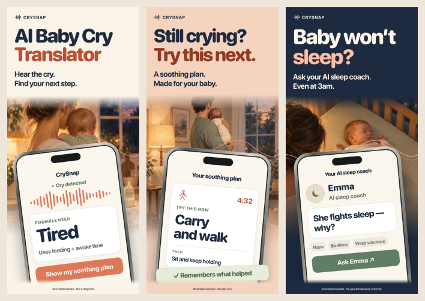
Логика первых трёх
| JTBD | Что продаём | Доказательство |
|---|---|---|
| Понять, с чего начать, когда малыш плачет | AI Baby Cry Translator | Обнаружение плача + возможная потребность из кормления и времени бодрствования |
| Перестать гадать и получить действие | Персональный план успокоения | Carry and walk → Sit and keep holding; таймер вторичен; память результата |
| Разобраться, почему малыш сопротивляется сну | AI sleep coach даже в 3am | Emma, существующий быстрый вопрос, темы naps / bedtime / wake windows |
В разведочном Jev-сравнении понимание плача — 0.620, конкретное успокоение — 0.192, сон — 0.048. Поэтому сон здесь третий дополнительный мотив, а не заявленная главная боль всех когорт.
Jev: понятнее — да. Больше скачиваний — пока не доказано
Финальные тексты S1/S2 сравнены в одинаковой структуре: 24 синтетических профиля × два порядка вариантов, 48 успешных вызовов. Шесть когорт представлены поровну. Это предпочтения модели по текстам, не оценка пикселей и не реальные родители.
| Вопрос | S1 | S2 | Ни один |
|---|---|---|---|
| Какой ряд яснее объясняет продукт? | 0.089 | 0.896 | 0.016 |
| Какой ряд сильнее мотивирует скачать? | 0.475 | 0.401 | 0.125 |
Направление сохраняется в обоих порядках. Предварительный раунд с описаниями разной подробности тоже предпочитал S1 по скачиванию; он сохранён, но не смешан с финальным. S2 отвечает запросу на смелую подачу и явный AI, а S1 оставлен ниже как контроль для настоящего теста.
Граница обещания
Translator — позиционирование категории, не обещание точного перевода причины по одному звуку. Поэтому в телефоне видно POSSIBLE NEED и Uses feeding + awake time. Код sprint определяет наличие плача по аудио, а возможную потребность — по контексту. AI sleep coach помогает с вопросами сна, но не гарантирует засыпание.
Телефоны и UI — редактируемая HTML/CSS-композиция поддерживаемых деталей, не снимки симулятора. Первые две иллюстрации сохранены из S1; третья создана заново. Вопрос Emma взят из существующего quick prompt, вымышленного ответа нет. Продуктовый код не меняли.
Проверены PNG, загрузка шрифта, границы UI и миниатюры 180/220 px. Исходники: marketing/appstore-v2/s2/; метод и сырые результаты: research/screenshots-s2-2026-09-21/. Не загружено в App Store Connect; перед отправкой нужен соответствующий релиз продукта.
S1 · предыдущий вариант — открыть для сравнения
S1 · Что ему нужно → что попробовать → кого спросить
Предыдущий вариант · 21.09.2026Первые три кадра для скачивания: узнаваемая ситуация, два крупных пояснения и один результат. Новые сцены, светлая серия, мама и папа с малышом. Продукт сверен с love8ko/sprint @ 0c69cd5.
Скачать все три PNG · 1320 × 2868, RGB, без альфы. Нажмите кадр для увеличения.
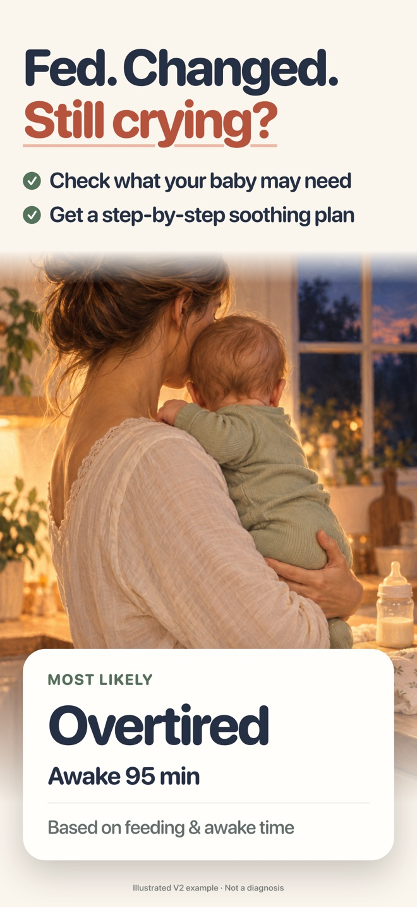
«Кормила, меняла — почему всё ещё плачет?» Возможная потребность с объяснением из кормления и времени бодрствования.
Скачать PNG
{kind=link}
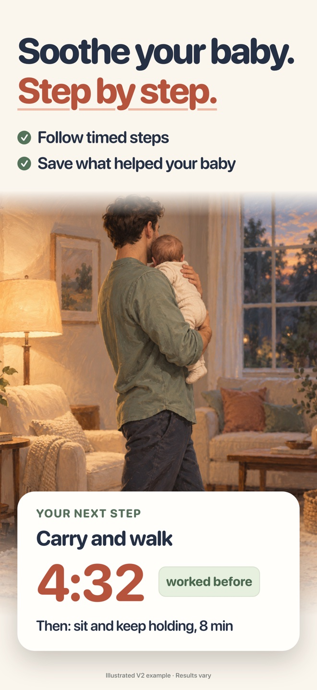
«Что делать и как долго?» Действие, таймер и отметка, что уже помогало малышу.
Скачать PNG
{kind=link}
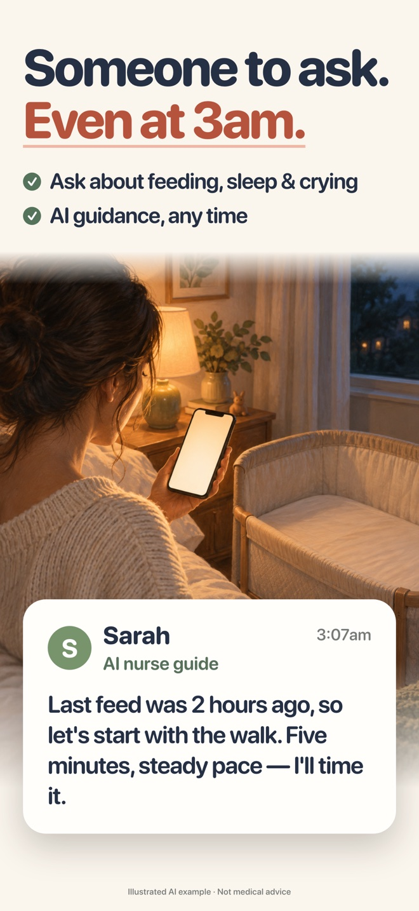
«Некому задать вопрос ночью». Пример ответа, крупная пометка AI; кормление, сон и плач.
Скачать PNG
{kind=link}
Три кадра при 220 px. Проверка при 180 px · Открыть ряд
{kind=link}
{kind=link}
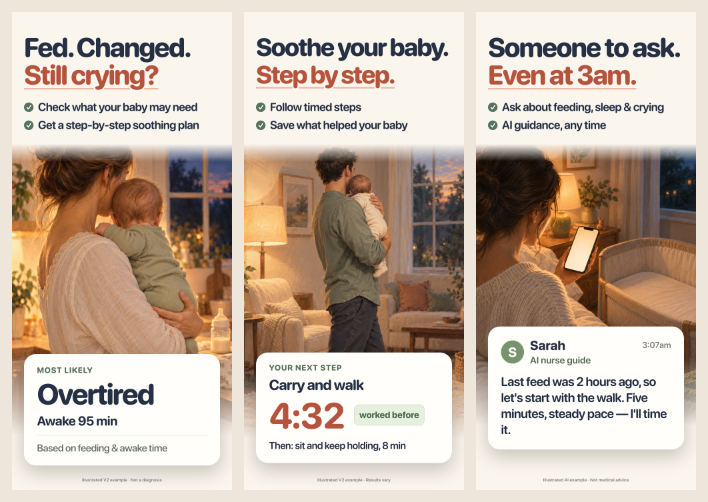
Боли → задачи → доказательство в продукте
| Кадр | Работа родителя | Что продаём | Почему здесь |
|---|---|---|---|
| S01 | Разобраться, с чего начать, когда кормление и смена подгузника не решили проблему | Возможная потребность + объяснение + план | Свежий замер sprint предпочитает связку ситуации и объяснения по намерению скачать |
| S02 | Получить конкретный следующий шаг и длительность | План с таймером, сохранение того, что помогло | Показывает действие и пользу уже сегодня |
| S03 | Задать вопрос о кормлении, сне или плаче ночью | AI-помощники с контекстом малыша | В новом сравнении даёт больше дополнительного мотива скачать, чем отдельный кадр памяти |
Это предложенный порядок витрины, а не универсальный рейтинг силы боли. Когорта colic сильнее реагирует на «Is it normal?»; помощники — на память малыша.
Что проверили через Jev
24 синтетических профиля × два порядка вариантов, 48 успешных вызовов. Равное представительство шести когорт; реальные доли трафика неизвестны. Сравнивали точные тексты и описания сцен, не пиксели.
| Вопрос | Результат | Решение |
|---|---|---|
| Какой третий кадр добавляет мотив скачать после первых двух? | Помощь ночью 0.475 · память малыша 0.286 · «это нормально?» 0.122 · ничего 0.117 | Помощь ночью; лидирует в обоих порядках (0.523 / 0.427) |
| Заголовок второго кадра при той же карточке | «Soothe your baby. Step by step.» 0.527 · «What to try. For how long.» 0.421 | Первый; стабилен между проходами (0.531 / 0.523) |
| Первый кадр, предыдущий замер sprint от 21.09 | «Fed. Changed…» + объяснение: балл намерения скачать 2.64/4; прежний T01 — 2.31 | Взяли концепт за основу; это не замер новых изображений S1 |
Числа — предпочтения модели, не доли родителей и не конверсия. Проверка смысла первого кадра согласуется с объяснением из контекста, но входной текст прямо подсказывает этот механизм. Рост скачиваний ещё не измерен. Следующий тест: T против S1 на сопоставимом трафике, основная метрика — первые скачивания.
Что настоящее и что иллюстрация
Три сцены созданы через ImageGen. Белые карточки — увеличенное представление деталей V2, а не новые снимки симулятора. Возможная потребность из контекста, таймер и отметка worked before сверены с кодом. Реплика Sarah дословно взята из примера на пейволе V2; это не запись живого диалога. Пример не подтверждает управление таймером из чата.
Шрифт 54 px (S02 — 50), пояснения 23 px на холсте 440 px. Проверены три RGB PNG 1320 × 2868, загрузка шрифта, переполнение и границы карточек; просмотрены миниатюры 220 px. Серию можно обсуждать и тестировать. Для загрузки в App Store она должна сопровождать соответствующую релизную V2.
Исходники и промпты: marketing/appstore-v2/s1/. Метод и сырые результаты: research/screenshots-s1-2026-09-21/. Предыдущие T/T-B сохранены в соседней вкладке.